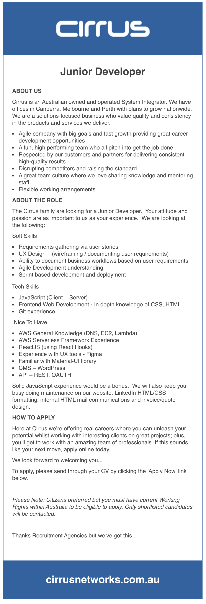

Ideal Job
Job advertisement
Junior Developer

The position
The position is an entry level, junior developer position with Cirrus Networks. Cirrus provide bespoke technology solutions for Australian businesses (Cirrus Networks, 2020). The position requires a mix of both technical skills and UX Design/understanding of development methodologies. It is this combination of “Soft Skills” and “Tech Skills” that make this job appealing to me as I believe that this position will involve both the understanding and implementation of entire projects from understanding users and communicating that through user stories and wireframing through to development using JavaScript, CSS and HTML.
While this is a junior position, I have chosen it as my “ideal job” as my target is to gain a foothold into the industry and refine my career path from there as I gain more hands-on industry experience and knowledge.
Required skills, qualifications and experience
The soft skills that have been listed as a requirement seem to revolve around user experience design (user stories, wireframing and documenting business workflows based on user requirements) and implementing the development in a deployment using Agile (Atlassian, 2020) and Sprint (Atlassian, 2020) methodologies. While the Technical skills appear to be quite narrow – reflecting the junior nature of the position – only requiring knowledge of JavaScript, “In depth knowledge” of CSS and HTML for front end web development plus Git experience.
Knowledge of Amazon Web Services is also mentioned along with ReactJS, Figma, familiarity of Material UI library, WordPress and OAuth for REST APIs. There is no mention of any required qualifications in the advert.
Current skills, qualifications and experience
Currently I don’t believe that I have the required skills or experience for this position. I am familiar with Adobe CC having used Adobe products professionally in my career as a graphic designer and have some exposure to Adobe XD which while not Figma is used to create wireframes and protypes. My point of difference for this position would be my experience working with design clients and soft skills around time and client management.
Personal Plan
I plan to complete the bachelor of IT through RMIT with a minor in web design which should be a good foundation and enough to satisfy the basic JavaScript, CSS and HTML requirements though perhaps will not be enough for the UX Design and development methodologies.
To develop my understanding of UX Design and methodologies I plan to do additional online study with the interaction design foundation. After completion of the bachelors I will aim to complete relevant certifications such as the AWS certification. In the first year of studying the bachelor of IT I will also become a member of the ITPA and enrol in the mentoring program to gain industry knowledge and insights. I will also volunteer on IT related projects to build my skills, portfolio and gain relevant references.